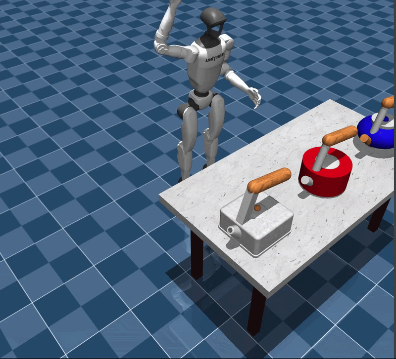
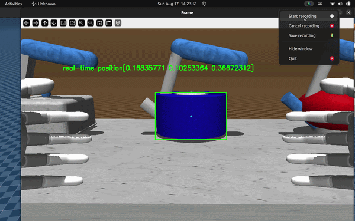

Unitree G1 MuJoCo Playground
PD-control of a Unitree G1 humanoid in MuJoCo through the SDK2 bridge, with a camera pipeline for localizing objects in the field of view.

Overview
PD-control of a dexterous, 23-DOF Unitree G1 humanoid in MuJoCo through the SDK2 bridge, with a camera pipeline for localizing objects in the field of view. Mujoco was chosen for the simulation because it's fast, lightweight, and has a robust physics engine, and Unitree provides an official SDK bridge that lets it act as a digital twin of the real robot. The project was built and tested on Ubuntu, and the repository has since picked up 13 stars on GitHub.
Workflow
The real humanoid communicates over Cyclone DDS using a publish-subscribe model. The SDK bridge remaps the LowCmd messages that drive the real robot's 23 degrees of freedom onto their Mujoco actuator equivalents, so the same command stream that would control physical hardware instead drives the simulated, dexterous humanoid through mujoco.viewer.
For perception, a camera is mounted on the humanoid's XML just above the pelvis and configured to pull RGB and depth data directly from the simulation, rendered through a custom OpenGL-based viewer standing in for the camera feed. Color-based detection (tuned for red) is applied to this feed to locate and draw a bounding box around the target object, a kettle. Once detected, the bounding box center and its depth are used to localize the object: the camera's intrinsic parameters (focal lengths) convert the pixel location into the camera frame via the pinhole model, and the camera's extrinsic parameters are then applied to transform that position into the world frame.
Abilities
The system can drive a dexterous, 23-DOF simulated Unitree G1 using the same LowCmd actuator commands as the physical robot, letting the Mujoco model act as a faithful digital twin for control development without hardware in the loop. On the perception side, it detects a colored object in the onboard camera's live RGB-D feed, computes its 3D position relative to the camera using pinhole-model geometry, and resolves that into a world-frame location using the camera's extrinsic calibration, closing the loop from raw pixels to a usable spatial coordinate.
